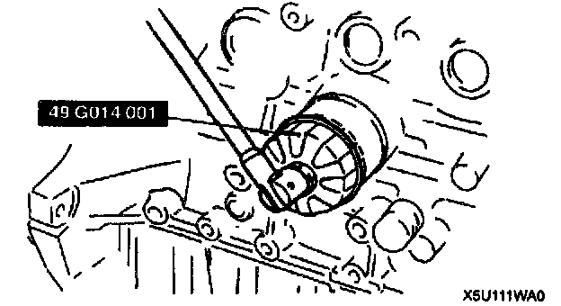

Oil Filter: Service and Repair
OIL FILTER REPLACEMENT
1. Remove the oil filter by using the SST.
2. Use a clean rag to wipe off the mounting surface on the oil filter body.
3. Apply clean engine oil to the O-ring of the oil filter.
4. Tighten the filter according to the installation direction on the side of it or packing box by using the SST.
5. Start the engine and inspect for oil leakage.
6. Inspect the oil level and add oil as necessary.